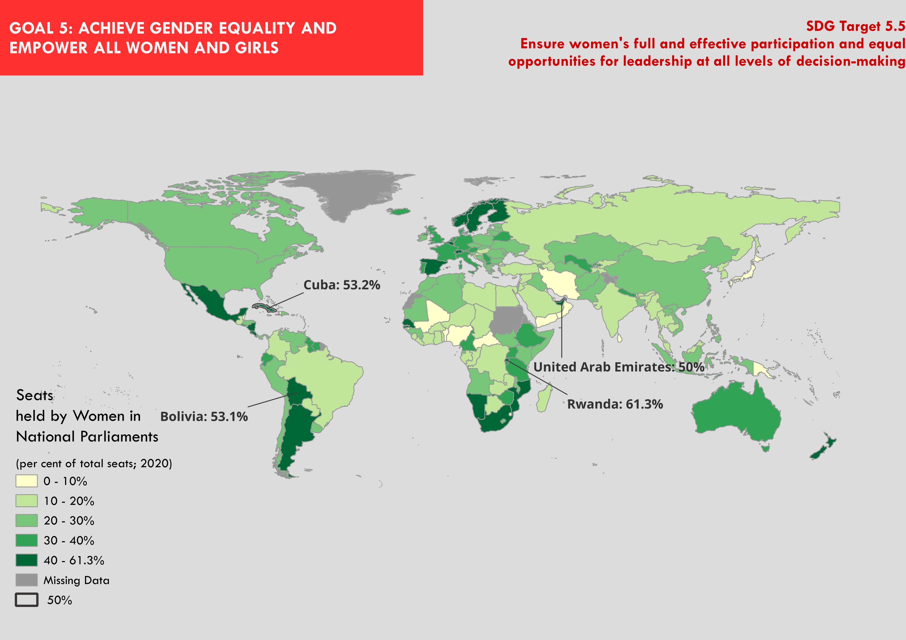
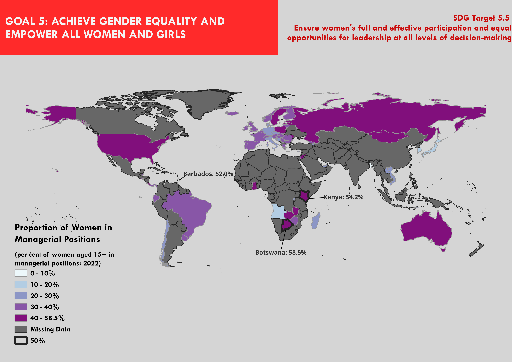

This choropleth project was to make a map of one of the SDG indicators. The purpose of my two maps was to show the two indicators for the target 5.5. The goal was to discover which countries were achieving target 5.5, which ensures women’s full and effective participation and equal opportunities for leadership at all levels of decision-making, the best. This could also allow the UN to see which nations require more aid to achieve this target.

The project consisted of choosing one of the UN’s SDG indicators and creating a choropleth map of it. By making a choropleth map it would highlight clearly which nations are achieving these indicators. But what is a choropleth map? A choropleth map is a map that shades different geographical areas to show attribute values. The difference in attribute values is normally shown by a visual variable colour value which goes from, for example, light to dark colours.
I decided to make 2 choropleth maps which cover indicator 5.5.1, which is the proportion of seats held by women in (a) national parliaments and (b) local governments and indicator 5.5.2 which is as mentioned above the proportion of women in managerial positions. SDG 5, Achieve Gender Equality and Empower all Women and Girls, is important to map. This is because despite the improvements in gender equality, these graphs will help to highlight that there is still more that needs to be done. I chose to focus on target 5.5 because it can easily be represented on a choropleth map and the data is relatively easy to collect.
The choropleth maps will focus on a global scale and the differences between nations. I have decided to make choropleth maps, using QGIS, because they are easy to make. Furthermore, they are commonly used with the general public making it a map which is easy to interrupt by people.
To make these two choropleth maps I decided to use QGIS. To do this, I downloaded the data for the indices from the UN data website. I then uploaded it to QGIS and then I uploaded the UN’s countries data as well. Then I joined both the data sets together and removed all the data that was not required. I then changed the colour and band thickness. I also highlighted all the countries that had above 50% in attribute table and made the band lines thicker. I also added the labels and arrows to the above 50% countries.
In the first graph, the countries which had over 50% women in parliament were Cuba, Bolivia, United Arab Emirates and Rwanda. We can also see that most of western Europe, Austraila, New Zealand and the countries in the South of Africa have also high percentages of women in parliament, with 30-50%. The nations which the UN should focus their resource are the ones in the middle of Africa and most nations in Asia.
The second graph has a lot of missing data. The nations with over 50% of women in managerial positions are Botswana, Barbados and Kenya. Due to the lack of data one cannot conclude which areas the UN should focus their help. However, the UN could encourage or help to collect the data from the missing countries so that one could determine where they should focus their resources.

Through making these maps, I gained the technical skill to produce choropleth maps on QGIS. It also helped develop my skills of using QGIS and understand what different functions it has. I also learned how to import data to QGIS and how to merge to data sets. In the second part, I learnt how to do HTML coding and how to make a basic webpage.
The limitation of this study was that the UN’s database for indicators had a lot of missing data. Many of the indicators had a lot of nations which did not have any data. This meant that there was only a limited number of indicators one could use. In addition, between the different years there was also missing data. This is also created problems as it meant that I had to choose older year, since they had the most data.
In addition, choropleth maps are not the best maps to use to presents ones data. For example, choropleth maps requires an enumeration unit to place the data, which can cause problems if there is not data for such a large area. Choropleth maps can also lead to normalisation of the data. Moreover, these maps tend to highlight the countries with larger areas, but SDG indicators and other socio-economic problems tend to be influenced by more than just population density. In addition, these maps do not represent the small island nation well as they are too small to see. The maps, also, do not give exact values to countries but provides a range for a specific colour. Finally, these maps can cause issues for individuals with colours vision deficiency if the colour schemes are not chosen well.
For future studies it would have been nice to have data for all nations so that we could interpret the data. It could also be possible for the managerial position to make a map on a regional scale to see if there are disparities between rural and urban. Future work could also make different maps to present the data about the indicators.